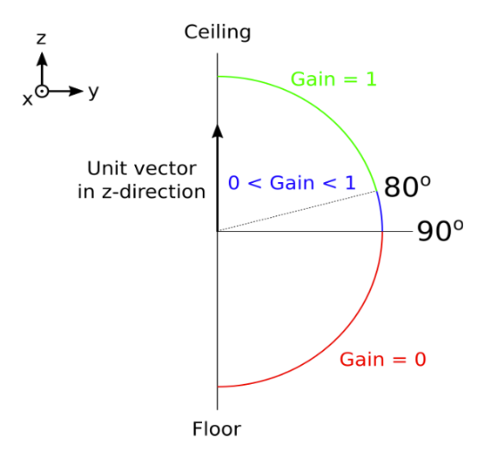

Home
See which appliances are running!Check out our demo!
Presentation Slides
Introduction
Smart assistants and smart homes are increasing in popularity as they gain more functionality and more product support. A major attraction to these smart assistants lies in how “smart” they are (i.e features) and how well they perform. Our main goal was based on these two attractions: How can we improve the method in which we handle noise/audio instances to get more functionality (features) out of the smart assistant world? In this experiment, we explore a fusion of sensors, classification models, and microphone array filters to try and better isolate/filter sounds to improve both performance and functionalities. We introduce a visual component along with audio classification to further improve appliance detection results and compare the implementation with only audio classification with our improved implementation.
Related Work
Prior work in this field focuses on a very typical approach: Beamform, Feature Extract, Classify[1]. Other papers, specifically dealing with embedded systems, focused on using tools like edge impulse to train a model from scratch and deploy/classify sounds with TinyML[2]. Kadukuntla, in a similar approach, used Matlab to deploy beamforming techniques for sound source detection and triangulation on an Arduino[3]. Other research used similar approaches by trying to solve background noise with better classification or better feature extraction[4][5]. A paper that caught our attention used a camera as a way to identify potential speech sources and used adaptive beamforming to identify voice activity coming from that potential speech source[6]. Based on this previous research and its shortcomings, we thought a combination of classifications, feature extraction, and adaptive spatial filtering may prove to be a useful approach at identifying multiple sound sources, especially when masking can occur.
High Level Approach
System Inputs/Equipment
For our system we chose to incorporate both visual and audio inputs from the surrounding environment via an external Raspberry Pi V2 Camera and ReSpeaker Microphone Array USB respectively. We decided that running our system on a Raspberry Pi 4 would be useful for portability, a powerful CPU, and an abundance of documentation. An even more vital reason was its easy integration with a Google Coral TPU for latency reduction on the audio and visual detection model we ran on our system. This, of course, depends on the size of the models, parameters, type of model and classifications, etc. However, we would not have to worry about this issue by implementing a Google Coral TPU. We would then be able to accelerate the heavier model (object classification) on the TPU while running the lighter model (audio classification) without the acceleration of the TPU.
Audio Classification
Tensorflow Lite Pre-Trained Model
We are using a Tensorflow Lite Pre-Trained Model for our audio classification. The advantage of using this model over other models that we tried are the relative size and the processing power needed. Compared to the other model that we tried using which is given below, this model uses 1/7th computation power. This model is trained on 521 audio events from the AudioSet. One biggest benefit of using this model is that it makes independent predictions for each of 521 audio events from the AudioSet. Using this idea, we implement normalization on top of this model to detect a subset of sounds corresponding to our appliances and extract the events of our interest.
Normalization
We get the confidence levels of each of our appliances of interest and normalize them, so that we can obtain their confidence levels independent of the other audio sounds which are outside the scope of our interest.
Object Detection
The object detection model was added to feed extra probabilities to the events/audio classification model due to the lack of flexibility mentioned in the audio classification model. The object detection had 3 intentions:
Object Classification
We can identify appliances and people within the scene to extract certain features we find people exhibit when cooking or interacting in the kitchen.
Closeness Feature
The main feature we wanted to receive from the environment and objects was if a human interacted with them in some way. To do so, the bounding boxes created by the object detection extracted the centroids then used the relative distance of centroids from person to object. The closeness from person to object was evaluated and incorporated into how probabilities added to the audio classification model.
Relative Angles
The main feature we wanted to extract from the object detection itself was relative angles to the camera. The following code shows the implemented equation:
The implemented camera has a certain horizontal and vertical FOV. By calculating the distance of an object centroid away from the x & y center of the camera and multiplying that by the FOV we can get a certain pixel-to-degree ratio, giving us relative angles of all our stationary objects. This can be used to later calibrate the spatial filters.
Microphone Array and Spatial Filters
The algorithm behind this module can be seen as follows:
Spatial Filter Initialization
The spatial filter was handled by ODAS, which allows the configuration of the ReSpeaker Microphone Array. With each static appliance angle found, as the person approached and interacted with the object of interest, a spatial filter configuration file can be called with ODAS in parallel with the original program. A spatial filter can be configured as followed:
This configuration was used to develop the filter for our demonstration. Where the relative angle of the sink lies between this upper and lower boundary within the transition of the gain.
The second figure describes the behavior of the filter, although most appliances in the environment behaved within the x-axis.
Generator and Module Outputs
A line generator had to be created to isolate ODAS outputs and receive the activity level in the direction of the appliance. This activity level was used as a threshold within the main code to confirm that there was, in fact, noise within the realm of the detect appliance. This was in conjunction with the closeness thresholds established earlier. If the activity level threshold was met (during filtering) and the closeness threshold were established, a certain probability increase could be sent to the audio classification module for a certain time x. This probability increase will only be affecting the likelihood of an event for our smart home assistant, not the audio classification.
Events
Now, we combine the results of both the models and predict the appliance which is detected to be turned on. We take actions based on the events that we detect and they are mentioned as follows:
- Food Chopping - Start playing music when food chopping detected & stop when it stops
- Fire Alarm - Send a notification message to the user about the fire alarm in the kitchen
- Fire - When fire is detected, simulate a fire alarm and send message to the user
- Water Faucet/Sink - If water running for a long time and person is detected, play music
- Microwave / Oven - Send a notification message to the user informing the food is ready
- Blender - Send a notification message to the user if blender is turned on for a specified time
AWS Integration
To create a flow for data to a potential user interface, we added AWS serverless integration by leveraging FaaS computing. We were able to set up a DynamoDB database to store appliances and their statuses, create a Lambda function to handle read and write operations to the database, and open an HTTP API Gateway to call POST, GET, and DELETE functions to the Lambda function at the appropriate routes. We update the database when appliances are detected with a status that indicates they are running and we update the database when appliances stop running with a corresponding status. On our project website we have put a link which executes a GET request, and we are able to see the values of the appliances in the database. For the future we hope to create a full user interface for our home appliance detection system.
Results
The results of the project could be broken down into two main objectives:
- Proper filtering and isolation of two sound sources.
- Proper implementation of events and classifications.
Proper Filtering and Isolation
Proper isolation and filtering were tested and validated in the demonstration/video for this project. The results were both successful and unsuccessful. By applying spatial filters based on the relative angles, the blender noise was completely masked. Additionally, the fauces/sink noise alone was more clear with an activity level of almost magnitude 1 compared to .6 with a dynamic filter. By applying the filter with two sources at once, the results were less successful. Proper filtering was still applied based on the closeness to the appliance. However, it seemed that whether a source was continuously detected was dependent on which source was turned on first. This was identified as a possible issue the way both the Respeaker and ODAS determine what is ‘white noise’ and would automatically stop detecting one within their own proper algorithms. The use of video in conjunction with audio provided very useful input to the filter and events. Cameras could provide very useful information to improve the experience with smart assistants and the way they define the interaction with our environment. However, of course, privacy concerns still exist with appliances that use visuals. Products like Roomba face controversies over such implementations so, without larger jumps in performance, privacy concerns may triumph over their implementations.
Implementation of Events and Classifications
For implementing the events and classification, we used the following technical concepts:
- Run multiple process in parallel: For playing music, we start a child process that runs music in parallel to the main program of appliance detection and kills the process based on certain conditions
- Sending notification to the user: We use Twilio Rest APIs that help send a message to the user based on detection of certain events
- Hysteresis: To make sure that appliance is detected actually, we implement a counter that waits on the continuous appliance detection for some time to actually implement an event-based action
Challenges Faced and Future Improvements
Challenge 1: Proper Relative Angles and XYZ coordinates
Improvements 1: Fix calibration of single camera, implement stereo camera, calculate XYZ coordinates and accurate relative angles using stereo camera.
Challenge 2: Hardware limitations in spatial filtering
Improvements 2: Can further improve the limitations of hardware by classifying the expected energy levels and behavior of the appliances as opposed to just noise and filtering.
Challenge 3: Hardware limitations in microphone array.
Improvements 3: An interesting improvement would be to focus on running the beamforming and filtering (possibly more) directly on a microphone array system and using a larger embedded system (like the raspberry pi) for more computationally intensive tasks. This could either increase performance or lead to a reduction in size for the system.
Contributions
Bhanu
- Survey of literature related to various detection models
- Running various models on Raspberry to compare the performance
- Integration of audio detection model
- Implementation of triggered Twilio events
- Implementation of running multiple processes in parallel
Nathan
- Survey of literature related to various detection models
- Integration of ODAS/ODASWEB
- Integration of object detection model
- Implementation of spatial filtering with object detection
Disha
- Design and implementation of the GitHub Website
- Survey of literature related to localization and hardware considerations
- Integration of ODAS/ODASWEB
- Implementation of spatial filtering with object detection
- Development and integration of AWS API Gateway, Lambda, and DynamoDB Suite
References
[1] A. R. Abu-El-Quran, R. A. Goubran and A. D. C. Chan, "Security monitoring using microphone arrays and audio classification," in IEEE Transactions on Instrumentation and Measurement, vol. 55, no. 4, pp. 1025-1032, Aug. 2006, doi: 10.1109/TIM.2006.876394.
[2] K. Trivedi and H. Shroff, "Identification of Deadliest Mosquitoes Using Wing Beats Sound Classification on Tiny Embedded System Using Machine Learning and Edge Impulse Platform," 2021 ITU Kaleidoscope: Connecting Physical and Virtual Worlds (ITU K), 2021, pp. 1-6, doi: 10.23919/ITUK53220.2021.9662116.
[3] K. Trivedi and H. Shroff, "Identification of Deadliest Mosquitoes Using Wing Beats Sound Classification on Tiny Embedded System Using Machine Learning and Edge Impulse Platform," 2021 ITU Kaleidoscope: Connecting Physical and Virtual Worlds (ITU K), 2021, pp. 1-6, doi: 10.23919/ITUK53220.2021.9662116.
[4] A. R. Abu-El-Quran and R. A. Goubran, "Pitch-based feature extraction for audio classification," The 2nd IEEE Internatioal Workshop on Haptic, Audio and Visual Environments and Their Applications, 2003. HAVE 2003. Proceedings., 2003, pp. 43-47, doi: 10.1109/HAVE.2003.1244723.
[5] Piczak2015-ESC-ConvNet.pdf (karolpiczak.com)
[6] T. F. Bergh, I. Hafizovic and S. Holm, "Multi-speaker voice activity detection using a camera-assisted microphone array," 2016 International Conference on Systems, Signals and Image Processing (IWSSIP), 2016, pp. 1-4, doi: 10.1109/IWSSIP.2016.7502768.
Grondin, F., Létourneau, D., Godin, C., Lauzon, J.-S., Vincent, J., Michaud, S., Faucher, S., & Michaud, F. (2022). ODAs: Open embedded audition system. Frontiers in Robotics and AI, 9. https://doi.org/10.3389/frobt.2022.854444
P. Pertilä et al., "Mobile Microphone Array Speech Detection and Localization in Diverse Everyday Environments," 2021 29th European Signal Processing Conference (EUSIPCO), 2021, pp. 406-410, doi: 10.23919/EUSIPCO54536.2021.9616168.
Introlab. (n.d.). Introlab/odas: Odas: Open embedded audition system. GitHub. Retrieved December 11, 2022, from https://github.com/introlab/odas
Anonymous, et al. “Respeaker Mic Array v2.0.” Seeed Studio, Seeed Technology Co.,Ltd., 25 Feb. 2022, https://www.seeedstudio.com/ReSpeaker-Mic-Array-v2-0.html
Tensorflow Lite examples: Machine Learning Mobile Apps. TensorFlow. (n.d.). Retrieved December 11, 2022, from https://www.tensorflow.org/lite/examples/
Raspberry pi 4 model B specifications. Raspberry Pi, (n.d.). Retrieved December 11, 2022, from https://www.raspberrypi.com/products/raspberry-pi-4-model-b/specifications/
Recognize sounds from audio. Edge Impulse Documentation, (n.d.). Retrieved December 11, 2022, from https://docs.edgeimpulse.com/docs/tutorials/audio-classification
Contact
Bhanu Chaudhary
Nathan Portillo
Disha Zambani